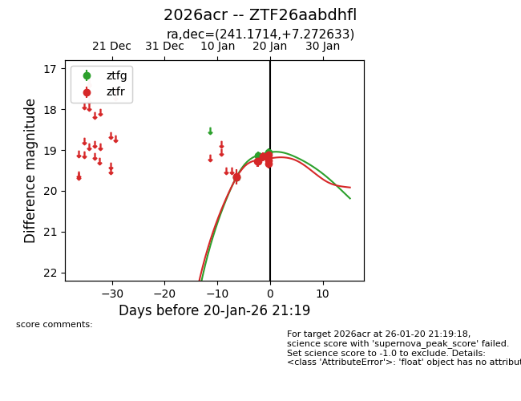
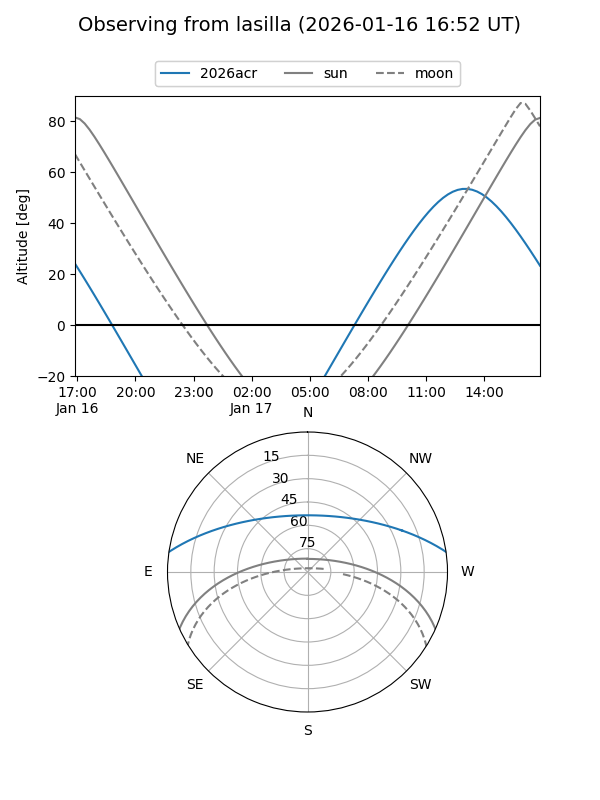
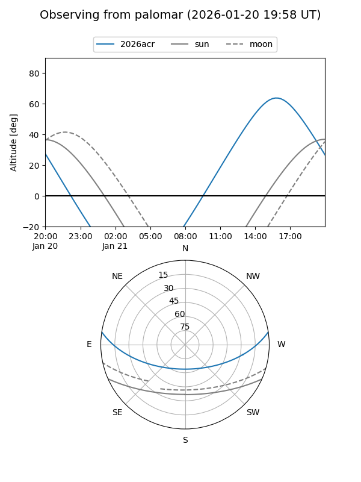
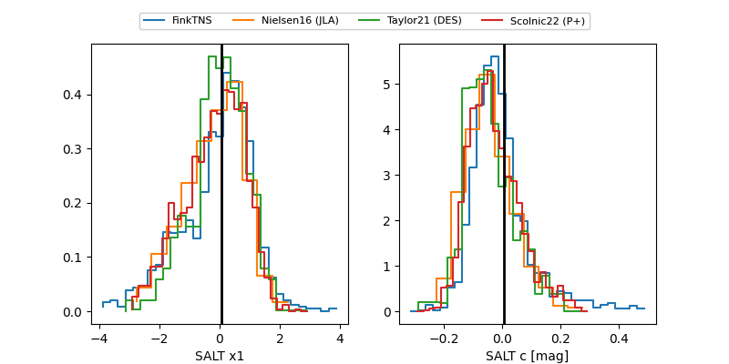

2026acr
Target 2026acr at 2026-01-26 14:31
Aliases and brokers:
FINK: link
Lasair: link
ALeRCE: link
TNS: link
YSE: link
alt names
ZTF26aabdhfl (ztf,fink_ztf)
2026acr (tns,yse)
Coordinates:
equatorial (ra, dec) = 241.1714,+7.27263
equatorial (HMS+DMS) = 16:04:41.14,+07:16:21.48
galactic (l, b) = (18.6799,+40.15595)
Flags:
Photometry:
last ztfg=19.05, ztfr=18.77
3 ztfg, 11 ztfr detections
Lightcurve

Visibility


Additional plots
